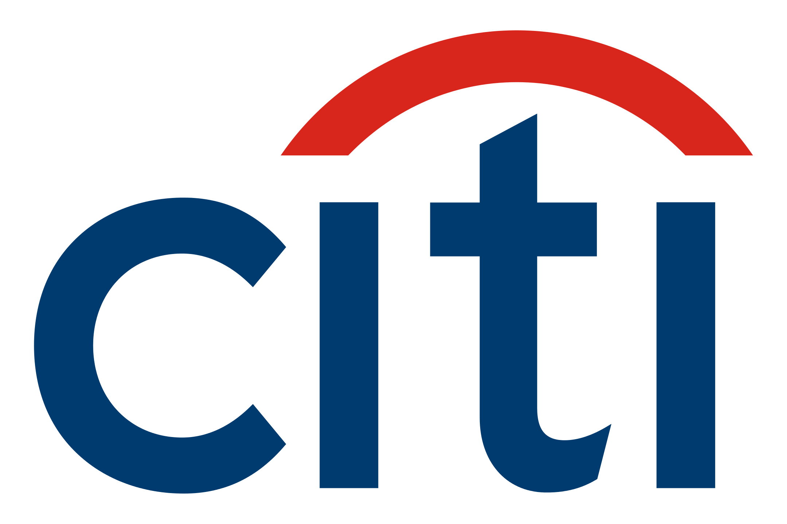
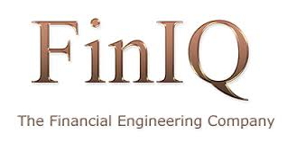
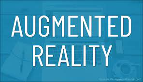

Education
-
New York University (NYU)
Master’s in Computer Engineering · May 2027 -
College of Engineering Pune (COEP)
B.Tech in Computer Engineering · May 2024
Work Experience

Technology Analyst – CITI Bank
Jul 2024 – Aug 2025
Developed features like bulk file uploads and basket-level column updates, improving trade execution speed by 40%. Implemented supervisory bypasses reducing manual intervention by 90%, and contributed to UI logic, unit testing, and CI/CD workflows in an agile team.

Software Developer Intern – FinIQ
Summer 2023
Led improvements to Volsurf algorithm and optimized model parameters, boosting strategy execution efficiency by 15%. Enhanced backend performance using Redgate ANTS and developed clean, object-oriented C# modules for financial data analysis and risk modeling.
Projects

Quantum Computing – Qiskit Metal
Designed hybrid quantum-classical models for classification and optimization using Qiskit Metal. Built quantum circuits and evaluated noise impact for scalable quantum applications.
Userland Threading – OS Project
Implemented multithreaded merge sort using userland thread scheduler. Focused on stack memory handling, scheduling policies, and real-time performance insights in C.

Search Term Analyzer
Built a full data science pipeline analyzing temporal trends in search terms using SciPy clustering, NLP techniques, and statistical modeling to derive actionable insights.
Link Link 2MFQS Algorithm – CPU Scheduling
Simulated a dynamic priority-based multi-level feedback queue scheduler in C. Improved average turnaround and response time for diverse OS workloads.
Link
The Pic Story – AR Android App
Developed an AR application that plays media when recognizing predefined images using Vuforia and OpenCV in Kotlin and Unity. Enabled creative multimedia storytelling.
LinkEncryp – Cryptography Tool
Engineered a secure communication platform using custom PHP-based encryption. Emphasized user privacy with database-integrated encrypted storage and chat features.
LinkPost-Ideas
Founded the world's first platform for monetizing ideas. Led full-stack development and business design to connect creators with investors and innovators.
The Base
Developed a comprehensive academic system with book lending, student dashboard, and attendance tracking using QR codes and web integration.
Publications & Patent
- EEG Classification using CNN Ensemble
- U-Net ResNet for Satellite Image Segmentation
- Battery Management System for EVs
- Patent: IoT-based Emergency Vehicle Clearance System (India Patent App No: 2305001IN-PS)
Skills
Extra-Curricular
- ELESPAHEV: Co-founded a startup converting petrol vehicles into hybrid electric vehicles with a portable battery system.
- Author: Published The One Sided Mind – exploring predeterminism and causality. [Available on Amazon]
- Interview Series: Conducted interviews with entrepreneurs to explore startup journeys and insights.
Positions of Responsibility
- Rotary Rotaract Relationship Officer – Rotaract Club of Pune Startup (Jun 2023 – 2024)
- Placement Coordinator – COEP (Jun 2022 – 2024)
- Secretary – Aerial Robotics Study Circle (Jan 2022 – 2023)
- DigiEduHack 2021: Won the Agrofood category with a solution for digital agriculture education.
- DigiEduHack 2020: Participated in “Professor Green”, a sustainable e-learning platform.